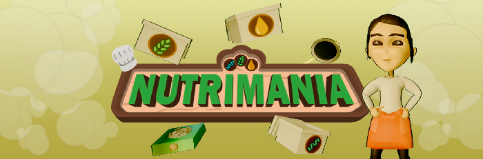
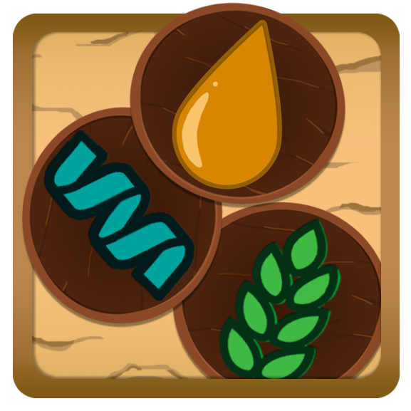
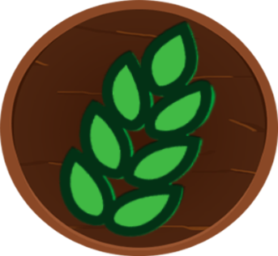
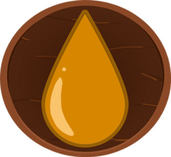
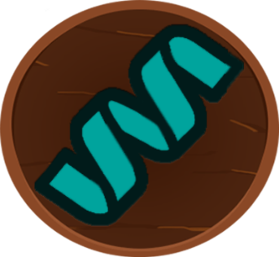
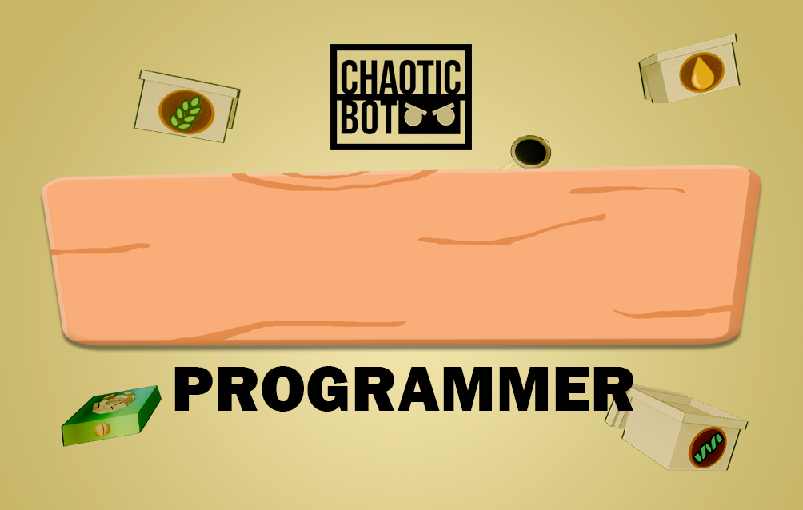
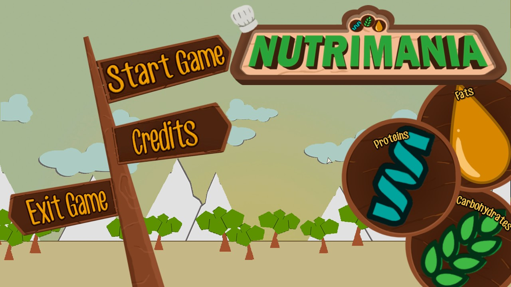

Nutrimania
Stop world hunger one town at a time! Prepare, cook and serve nutritious food for your customers throughout the day. Take your time in developing the town you are currently residing in. See the change that starts within you and you might change the world.
Highlights
- Produced and designed a time management game made in Unreal Engine from conception to alpha.
- Researched and interviewed food experts about macronutrients and nutrition-based government programs during pre-production.
- Designed 2 major phases in the game -- Feeding Program with 3 levels and Livelihood Program with a shop upgrade system.
- Employed data-driven and statistical models into the overall balancing of the levels.
- Designed UI, HUDs and marketing materials for the game.
- Received Best Game CAPSTONE 1 and nomination for Best Game for Many in the ICT Creatives Award.

Features
Nutrimania is a time management game that puts the players in the shoes of a Non-Governmental Organization worker. They will serve food that fits the people's nutritional needs by the day then use up funds to build livelihood programs for them and give them opportunities to grow and be stable as a standalone village.
- Make the perfect meal by choosing and mixing among different macronutrients.
- Race against time and serve all villagers before the end of the day.
- Buy infrastructures and build the village to its self-sustaining potential.
The core loop of Nutrimania is quite similar to the classic time management games such as Cake Mania or Diner Dash. Players have a limited amount of time during the day to serve meals or prepare food, they earn money which they will maximize by making intentional upgrades to their kitchen. However, in Nutrimania, instead of upgrading your own setup, we chose to instead upgrade the entire village which will give in-game benefits like extra funds, more villagers, better ingredients and so on.

Feeding Program
Design
Feeding Program is the phase in the game where players get to prepare proper meals for the villagers under a time pressure. Using the classic time management game model, villagers will be queueing up to the counter and wait for their meals to be prepared. There are several variations to the villagers in the game that requires different macronutrients.
- Normal Children - are simple children with normal needs that only requires one type of macronutrient in order to fulfill their needs.
- Undernourished Children - are children variation with more macronutrient needs so they usually need at least 2 different types in order to maintain a healthy balanced diet.
- Pregnant Woman - is the only adult variation that requires a full and balanced meal because not only are they eating for themselves but to also take care of the child they are bearing. They require all macronutrients to make sure they are hitting the right amount.
For the levels, I employed a data-driven strategy and some statistics into balancing the time it takes to fully complete the level. We let users play the game and had it timed and used those collated data into crafting an experience that feels fair but not boring.
What I learned through designing the levels of Nutrimania is that the time management game genre really thrives on putting the players on edge, forcing them to multitask and letting them make quick decisions on how to optimize a chain of actions. That is why the design of this game had to be driven by data and statistics. There is always an amount of time while chaining actions that orchestrates the emotion of time-pressured stress.
This table is just an example of what I mean by this. I had to figure out how much time is needed to cook a meal and making multiples of them, how many stoves they need to multitask the cooking portion, how many customers need to enter, what are the intervals in which customers enter, how long do they wait for their meal to be served and so much more.
In the end, I settled with a more relaxed and lenient design that still allows room for some mistakes to happen to make it also accessible for newer players. It might be easy to the experienced gamers but to casual and non-gamers it might pose as a reasonable challenge. Since it was just a three-level game that serves as a model of what's to come, I thought it made sense to design it like that.
Livelihood Program
Design
Livelihood Program is the upgrade and shop system of the game where players can use their funds in order to build infrastructures and provide opportunities to the villagers. The design of this comes from the governmental programs we have in the Philippines that assures that people can have a healthy and well-balanced meal lifestyle while also upskilling and learning how to self-sustain.
For now, the shop's purpose is to build infrastructures to the villagers like growing livestock or crops. This in turn reduces the cost of next levels which in this world means that in order for them to help the next village, they need to make sure that the previous one is self-sustaining and can even earn for themselves.
But there are plans of expanding this to allow an expanded range of ingredients with macro and micronutrients and invite more villagers in a level just to name a few. Overall, the design of this is to really subvert the expectations of the upgrade system of instead upgrading for yourself, you are closer to a city builder where you are integrated in the world. Changes made in the world will reflect back to you as a whole and you can get to see the village develop.
Nutrimania Art
Art
This game also forced me to wear the hat of not just a project manager and game designer, but also of an artist. I had to do UI, HUDs and some marketing materials for the game. Here are just some of the featured art I made for Nutrimania but you can see more in my Nutrimania Art Compilation.







ICT Awards Nomination
This was the highlight of our 2018 when Nutrimania got nominated for Best Game for Many in the ICT Creatives Awards. There were other tight competition and the winner is well-deserved but we were honored to be a part of the list. Nutrimania pushed us forward into achieving bigger and better things.